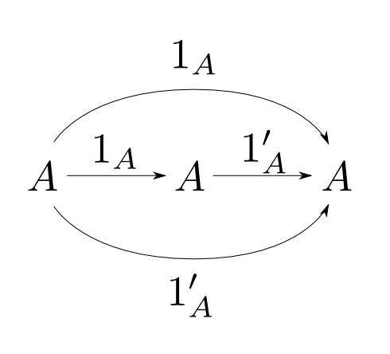
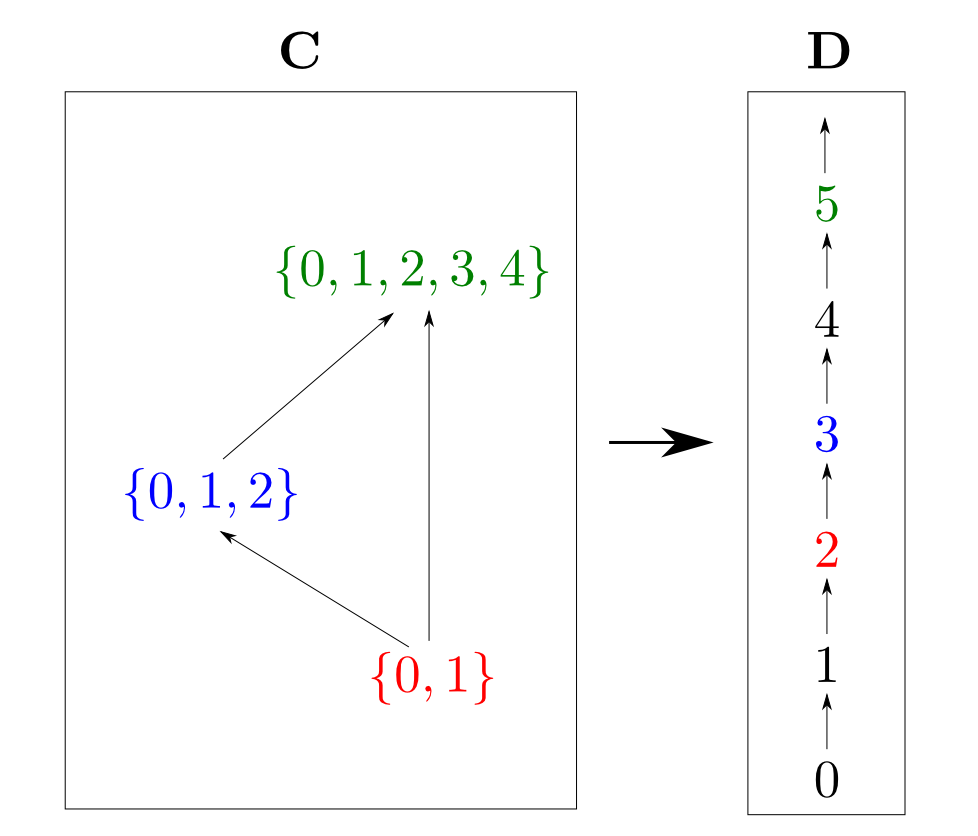
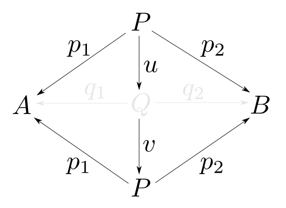
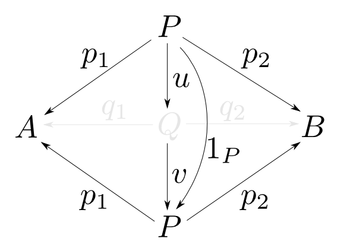

圏論勉強会
第1回
@ワークスアプリケーションズ
中村晃一2013年5月16日
謝辞
この会の企画・会場設備の提供をして頂きました
㈱ ワークスアプリケーションズ様
にこの場をお借りして御礼申し上げます。
自己紹介
- 中村晃一
- 東京大学 大学院 情報理工学系研究科
コンピュータ科学専攻 後期博士課程 2年 - プログラム最適化・言語処理系の実装技術・人間と言語の関係等に興味があります。
- twitter: @9_ties
はじめに
この会について
- 圏論(category theory)を題材にいろんなことを学びます。
- 分かり易さを重視して初歩的な例を多用します。
- 関数型言語の経験がある方がより楽しめると思います。資料中では主にHaskellを使います。
- この資料はhttp://nineties.github.com/category-seminarに置いてあります。
参考書
- 私はSteve Awodey著「Category Theory」で学びました。
- 数学を専攻していない人でも読めるように書かれています。
- pdf: http://www.andrew.cmu.edu/course/80-413-713/notes/

参考書
- 資料中の日本語表現はS.マックレーン著 三好博之/高木理訳「圏論の基礎」に倣います。
- 数学専攻者向けです。

第１回:圏論って何?
第1回の内容
初回は「圏論とはどのような学問なのか？」がなんとなく解るように,一部の重要な題材をピックアップしてざっと紹介します。
具体例から始めよう
「対」とは何か?
データ型$A$,$B$があるとします。この時，$A$と$B$の対(pair)を表すデータ型Pとはどのようなものでしょうか？
Haskellだと
type P = (A, B)
とか
data P = Pair A B
など。
C言語なら
struct P {
A first;
B second;
};
など。
フィールドの名前や順番はどうでも良いので
struct P {
B bar;
A foo;
};
とかでも良い。
例えばA,Bがdouble型なら,複素数型
double _Complex
も対と見なせる。
例えばA,Bが16bit自然数ならばビット演算を使って
(a << 16) | b
も対と見なせる。
このように対の具体例は"いくらでもある"のだけど結局対とは何？
定義が必要!
抽象的な概念の具体例を挙げる事はいくらでも可能ですが,例示による曖昧な理解のままでは先に進めません。 定義を定める事が必要です。
定義の抽象性が重要
より抽象的な定義はより多くの具体例を包括します。
データの構造に依らない「対」の定義を考えましょう。
まず$P$はそれから$A$,$B$型のデータを得る特定の関数を備えているはずです。 これらを$\mathrm{first}$と$\mathrm{second}$と呼ぶことにします。
この事は,以下のような図式(diagram)で表現できます。
A,B型への関数を持つデータ型は無数に存在しますので,これだけでは定義になりません。
ある型からA,B型への関数も無数に存在し得ますので$\mathrm{first}$,$\mathrm{second}$の特徴付けが必要です。


この事は関数合成の記号$\circ$を用いると
と表す事ができます。
または「以下の図式が可換(commutative)である」と言います。
$u$の唯一性
$P$が対でなくても図式は可換になり得ます。例えば$u$が余分なデータを付け足し$\mathrm{first}$,$\mathrm{second}$がそれを捨てる場合などです。
余分なデータがあれば,その生成方法がいくつかあるので$u$は唯一に定まりません。 従って,$f$,$g$に対して$u$が唯一である事を要請する必要がありそうです。
「対」の定義
型$A$,$B$の対とは型$P$,関数$\mathrm{first}: P\rightarrow A$，$\mathrm{second}: P\rightarrow B$からなり, 任意の型$X$と任意の関数$f: X\rightarrow A$, $g: X\rightarrow B$に対して，以下の図式が可換となるような $u: X\rightarrow P$が唯一つ存在するものである。
「対」の定義
型$A$,$B$の対とは型$P$,関数$\mathrm{first}: P\rightarrow A$，$\mathrm{second}: P\rightarrow B$からなり, 任意の型$X$と任意の関数$f: X\rightarrow A$, $g: X\rightarrow B$に対して，以下の図式が可換となるような $u: X\rightarrow P$が唯一つ存在するものである。

「対」の定義
型$A$,$B$の対とは型$P$,関数$\mathrm{first}: P\rightarrow A$，$\mathrm{second}: P\rightarrow B$からなり, 任意の型$X$と任意の関数$f: X\rightarrow A$, $g: X\rightarrow B$に対して，以下の図式が可換となるような $u: X\rightarrow P$が唯一つ存在するものである。

「対」の定義
型$A$,$B$の対とは型$P$,関数$\mathrm{first}: P\rightarrow A$，$\mathrm{second}: P\rightarrow B$からなり, 任意の型$X$と任意の関数$f: X\rightarrow A$, $g: X\rightarrow B$に対して，以下の図式が可換となるような $u: X\rightarrow P$が唯一つ存在するものである。
普遍性による定義
ここでは,全ての$(f,g)$が$P$を経由して$u$と$(\mathrm{first},\mathrm{second})$に一意的に分解される事を要請しています。
この性質を$P$,$\mathrm{first}$,$\mathrm{second}$の普遍性と言います。
後で説明しますがこのように定義すると$P$が(同型という対応を除いて)一意的に定義されます。
抽象化の力
今の例において
- $P$,$A$,$B$,$X$が型であるという事
- $\mathrm{first}$, $\mathrm{second}$, $u$, $f$, $g$が関数であるという事
- $\circ$が関数合成であるという事
は本質的ではありません。
使われている語彙は何らかの「もの」と「矢印」と「矢印の連結」です。
「対」のアナロジー
アナロジー的に
- 「もの」をある集合$X$の部分集合
- 「矢印」を集合の包含関係
- 「矢印の連結」を包含関係の合成 $$A \subseteq B, B\subseteq C\,\text{ならば}\,A \subseteq C$$
とすると「対」の概念は何に対応するか考えてみます。
例として$X=\{1,2,3\}$の時を考えます。


つまり$\{1, 2\}$と$\{1, 3\}$の「対」に相当するものは$\{1\}$です。
実は,「集合と包含関係」の場合の「対」に対応する概念は「$A$,$B$の共通部分」となります。
「対」のアナロジー(その2)
今度は
- 「もの」を整数
- 「矢印」を「$\leqq$」
- 「矢印の連結」を「$\leqq$」の合成 $$ a \leqq b, b \leqq c\,\text{ならば}\,a\leqq c$$
に置き換えてみます。
具体例として$4$と$6$の「対」を考えます。

このうち「対」と同じ普遍性の条件を満たすのは$4$です。

つまり$4$と$6$の「対」に相当するものは$4$です。
実は,「整数と順序」の場合の「対」に対応する概念は「$\min\{A,B\}$」となります。
素朴な定義では共通性が見えないが
$A$,$B$の共通部分とは$A$,$B$の両方に含まれる要素全てからなる集合である。
$\min\{A,B\}$とは$A$,$B$のうち小さい方である。
言葉を変えると共通性が見える
集合$A$,$B$の共通部分$P$とは$P\subseteq A$,$P\subseteq B$であって,$X\subseteq A$,$X\subseteq B$であるような任意の$X$に対して$X \subseteq P$となる集合の事である。
整数$A$,$B$の最小値$M$とは$M\leqq A$,$M\leqq B$であって,$X\leqq A$,$X\leqq B$であるような任意の$X$に対して$X \leqq M$となる整数の事である。
一見すると無関係な3つの概念が,同じ言葉で説明できる事を見ました。
| 型と関数 | ・・・ | 対 |
| 集合と包含関係 | ・・・ | 共通部分 |
| 整数と順序 | ・・・ | 小さい方 |
圏論的な定式化は後でやりますが,これらを圏論では 積(product)と呼びます。
抽象化の力
概念を「内部の構造」ではなく「外部との関係」によって特徴付ける事によって
- 概念の背後にある本質的な性質が見えてくる。
- 概念から概念への強力なアナロジーが可能になる。
という事が解ります。
圏論を学ぶ意義
良い言葉を使う事は良い思考をする事を助けます。様々な抽象概念を明快に記述する為の体系として圏論は良い選択肢であると思います。 圏論の概念を積極的に利用するHaskellなどを使う場合はもちろん,それ以外の言語を使う場合やプログラミング以外の場面においても役に立つと思います。
圏
圏の定義
圏(category)とは
- 対象(object):$A,B,C,\cdots$
- 射(arrow,morphism):$f,g,h,\cdots$
- 射の合成(composition): $\circ$
からなり,以後の条件を全て満たすものである。
任意の射$f$には
- ドメイン(domain): $\mathrm{dom}(f)$
- コドメイン(codomain): $\mathrm{cod}(f)$
という２つの対象が備わる。
$\mathrm{dom}(f) = A$,$\mathrm{cod}(f) = B$である事を $ f: A\rightarrow B$ と表す。

射$f:A\rightarrow B$,$g:B\rightarrow C$が存在するならば,
- 合成射(composite) $ g\circ f: A \rightarrow C $
も存在する。

任意の射$f: A \rightarrow B$, $g: B \rightarrow C$, $h: C \rightarrow D$に対して 結合律(associative law)
が成り立つ。すなわち,下図が可換である。

任意の対象$A$に対して
- 恒等射(identity) $ 1_A: A \rightarrow A $
が存在し,任意の$f: A \rightarrow B$に対して単位元律(identity law)
が成り立つ。すなわち,右下図が可換である。

端的に言うと,圏とは
- 対象の集まりと
- 対象から対象への射の集まりからなり
- 同じ対象に出入りする射の対は必ず合成でき
- 射はどこから合成してもよく
- 恒等射がある
ものです。
先ほどの例における恒等射
- 型と関数の圏 $$ \text{恒等関数}\ 1_A(x) = x $$
- 集合と包含関係の圏 $$A \subseteq A$$
- 整数と順序の圏 $$A \leqq A$$
恒等射の一意性
対象$A$についての恒等射を$1_A$と表せるのは, 任意の$A$について恒等射が一意に定まるからです。

【一意性の証明】
$1_A,1'_A: A\rightarrow A$が共に恒等射だとする。
恒等射の性質より右図の上半分,下半分はどちらも可換だから
$$ 1_A = 1'_A $$
となる。つまり恒等射は一意に定まる。□
このような証明スタイルをdiagram chasingといいます。
積の定義
対象$A$,$B$の積とは対象$P$,射$p_1: P\rightarrow A$，$p_2: P\rightarrow B$からなり, 任意の対象$X$と任意の射$f: X\rightarrow A$, $g: X\rightarrow B$に対して，以下の図式が可換となるような $u: X\rightarrow P$が唯一つ存在するものである。
同型
同型とは
あるものとあるものの「等しさ」というのは曖昧な概念です。
例えば集合$\{0, 1, 2\}$と$\{1, 3, 5\}$は異なりますが
「要素の数」という観点ではある意味等しいです。
圏論には「～と～がある意味等しい」という事について正確に述べる為の様々な言葉が登場しますが,「同型」もその一つです。
同型の定義
$f: A\rightarrow B$に対して,$g: B\rightarrow A$が存在し,
が成り立つならば$f$を同型射(isomorphism)と呼ぶ。
また,圏$\mathbf{C}$において$A$と$B$の間に同型射が存在するならば,$\mathbf{C}$において$A$は$B$と同型(isomorphic)であると言い,
$$ A \cong B$$
と表す。

- 対象: 集合
- 射: 恒等関数のみ
からなる圏では$\{0,1,2\}$と$\{1,3,5\}$は非同型です。

注: 同じ色の矢印を全部合わせて1つの関数(射)です。
- 対象: 集合
- 射: 任意の関数
からなる圏では$\{0,1,2\}$と$\{1,3,5\}$は同型です。

注: この図にあるのは同型射のうちの1つ(全部で6つ)です。
逆射
$f: A\rightarrow B$が同型射ならば
となる$g$は一意に定まる。このような$g$を逆射(inverse)と言い$f^{-1}$と表す。
 【一意性の証明】
【一意性の証明】
$g, h: B\rightarrow A$が$f$の逆射であるとすると右図が可換となるから,
$$ g = h $$
となる。つまり逆射は一意に定まる。
□
函手
函手とは
函手(functor)とはある圏からある圏への 構造を保つマッピングの事です。複数の圏にまたがる議論を可能にする非常に便利な道具です。
ところで圏の構造とは
- 対象
- ドメインとコドメインを備えた射
- 射の合成
- 恒等射
の事でした。
函手とは
圏$\mathbf{C}$から圏$\mathbf{D}$への函手$F: \mathbf{C}\rightarrow\mathbf{D}$とは
函手とは
$\mathbf{C}$の全ての対象を$\mathbf{D}$の対象へ移し
函手とは
ドメイン・コドメインを保って$\mathbf{C}$の全ての射を$\mathbf{D}$の射へ移し,
函手とは
このとき,射の合成関係と
函手とは
恒等射を保つものです。
例えば$\mathbf{C}$と$\mathbf{D}$が下図のような圏ならば,
このようなマッピングが函手の例です。
函手の定義
圏$\mathbf{C}$から圏$\mathbf{D}$への函手$F: \mathbf{C}\rightarrow\mathbf{D}$とは $\mathbf{C}$の各対象$A$に$\mathbf{D}$の対象$F(A)$を対応付け, $\mathbf{C}$の各射$f: A\rightarrow B$に$\mathbf{D}$の射$ F(f): F(A) \rightarrow F(B) $を 対応付ける2つの関数の組であり,以下の条件を満たすものである。
- 任意の$\mathbf{C}$の射$f: A\rightarrow B$, $g: B\rightarrow C$に対して $$ F(g\circ f) = F(g) \circ F(f) $$
- 任意の$\mathbf{C}$の対象$A$に対して $$ F(1_A) = 1_{F(A)} $$
函手は可換図式を保つ
函手は合成射と恒等射を保つので,可換図式も保ちます。
例えば,下図の上の図式が可換ならば下の図式も可換です。

つまり,逆射も保たれますし同型性も保たれます。 $$ F(f^{-1}) = F(f)^{-1} \qquad A\cong B \Rightarrow F(A) \cong F(B)$$
函手の例

- 集合$A$に$A$の要素数
- $\subseteq$に$\leqq$
を対応させる事は$\mathbf{C}$から$\mathbf{D}$への函手です。
函手の例(その2)
- 型$A$に,リスト型$[A]$
- 関数$f$に,$\mathrm{map} f$
を対応させる事は$\mathbf{C}$から$\mathbf{C}$への函手(リスト函手$[-]$)です。
双対性・積・余積
双対性とは
双対性(duality)とはある意味で表裏一体になっているような２つの概念の関係です。 例えば
- 共通部分と和集合
- $\min$と$\max$
- 「かつ」と「または」
- 最大公約数と最小公倍数
などが分り易い双対の例です。
双対圏
圏$\mathbf{C}$に対して,対象はそのままにし射を逆向きにした圏を
$\mathbf{C}$の双対圏(opposite category)と言い
$ \mathbf{C}^{\mathrm{op}} $と表す。
双対性の例
下図の圏(整数と$\leqq$)における$4$と$6$の積は$\min\{4, 6\}$でした。

一方,双対圏における$4$と$6$の積は$\max\{4, 6\}$となります。
双対性の例(その2)
下図の圏($\{1,2,3\}$の部分集合と包含関係)における$\{1,2\}$と$\{1, 3\}$の積は$\{1\}$,つまり共通部分でした。

双対性の例(その2)
一方,双対圏における$\{1, 2\}$と$\{1, 3\}$の積は$\{1,2,3\}$,つまり和集合となります。

余積
双対圏における積(product)を元の圏における余積(coproduct)と言います。
一般に,双対な概念を表す場合に接頭辞"co-"を使います。日本語では「余」を使います。
余積の定義
対象$A$,$B$の余積とは対象$Q$,射$q_1: A\rightarrow Q$，$q_2: B\rightarrow Q$からなり, 任意の対象$X$と任意の射$f: A\rightarrow X$, $g: B\rightarrow X$に対して，以下の図式が可換となるような $u: Q\rightarrow X$が唯一つ存在するものである。
「対」の双対は？
型と関数からなる圏における積は「対」でした。
では余積は何に対応するでしょうか？

「対」の双対は？
$A$,$B$の余積$Q$とは次のようなものです。
- $Q$は$A$,$B$を「貼りあわせた型」である。
- $A$からは$\mathrm{left}$という関数で値を埋め込む。
- $B$からは$\mathrm{right}$という関数で値を埋め込む。
- $u$は$\mathrm{left}$,$\mathrm{right}$のどちらで作られたかによって$f$,$g$に値を「振り分ける」関数である。

代数的データ型
これまで「対」とか「貼り合わせ」とか言っていましたが，普通は「直積」「直和」と呼びます。
ところでHaskellやO'Caml等の関数型言語で用いられる「代数的データ型」では直積・直和の概念が基本になっています。
-- String, Intの直積
data Person = Person { name :: String, age :: Int }
-- (いくつかの直積の)直和
data Shape = Circle { radius :: Double }
| Rectangle { height :: Double, width :: Double }
同型を除いて一意
任意の圏$\mathbf{C}$の対象$A$,$B$についてその積が存在するなら,それらは全て同型です。このことを$A$,$B$の積は同型を除いて一意である(unique up to isomorphism)と言います。
 $(P,p_1,p_2)$, $(Q, q_1, q_2)$が共に$A$,$B$の積であるとして右の図式を考える。積の性質よりこれは可換図式である。
すると,右図も積の可換図式となっている。つまり,右図が可換となる$P$から$P$への射は一意に定まる。ところで,射$v\circ u$も$1_P$も右図を可換とするので,そのような射の一意性より$ v\circ u = 1_P $である。全く同様にして$ u\circ v = 1_Q $
も成り立つので$u$,$v$は同型射である。すなわち
$$ P \cong Q $$
である。 □
$(P,p_1,p_2)$, $(Q, q_1, q_2)$が共に$A$,$B$の積であるとして右の図式を考える。積の性質よりこれは可換図式である。
すると,右図も積の可換図式となっている。つまり,右図が可換となる$P$から$P$への射は一意に定まる。ところで,射$v\circ u$も$1_P$も右図を可換とするので,そのような射の一意性より$ v\circ u = 1_P $である。全く同様にして$ u\circ v = 1_Q $
も成り立つので$u$,$v$は同型射である。すなわち
$$ P \cong Q $$
である。 □
 $(P,p_1,p_2)$, $(Q, q_1, q_2)$が共に$A$,$B$の積であるとして右の図式を考える。積の性質よりこれは可換図式である。 すると,右図も積の可換図式となっている。つまり,右図が可換となる$P$から$P$への射は一意に定まる。ところで,射$v\circ u$も$1_P$も右図を可換とするので,そのような射の一意性より$ v\circ u = 1_P $である。全く同様にして$ u\circ v = 1_Q $ も成り立つので$u$,$v$は同型射である。すなわち $$ P \cong Q $$ である。 □
 $(P,p_1,p_2)$, $(Q, q_1, q_2)$が共に$A$,$B$の積であるとして右の図式を考える。積の性質よりこれは可換図式である。 すると,右図も積の可換図式となっている。つまり,右図が可換となる$P$から$P$への射は一意に定まる。ところで,射$v\circ u$も$1_P$も右図を可換とするので,そのような射の一意性より$ v\circ u = 1_P $である。全く同様にして$ u\circ v = 1_Q $ も成り立つので$u$,$v$は同型射である。すなわち $$ P \cong Q $$ である。 □
$(P,p_1,p_2)$, $(Q, q_1, q_2)$が共に$A$,$B$の積であるとして右の図式を考える。積の性質よりこれは可換図式である。 すると,右図も積の可換図式となっている。つまり,右図が可換となる$P$から$P$への射は一意に定まる。ところで,射$v\circ u$も$1_P$も右図を可換とするので,そのような射の一意性より$ v\circ u = 1_P $である。全く同様にして$ u\circ v = 1_Q $ も成り立つので$u$,$v$は同型射である。すなわち $$ P \cong Q $$ である。 □
積の表記
$A$,$B$の積は全て同型なので,特定の一つを指定しなくても議論を矛盾なく進める事が出来ます。そこで今後は下の表記を使います。
- $A$,$B$の積を$A\times B$と表す。
- $f$, $g$から一意に定まる$A\times B$への射を $ \langle f, g \rangle$ と表す。
余積の表記
余積は双対圏での積なので自動的に「余積も同型を除いて一意」であると言えます。従って同様に下の表記を使う事が出来ます。
- $A$,$B$の余積を$A + B$と表す。
- $f$, $g$から一意に定まる$A+ B$からの射を $ [f, g] $ と表す。
自然性
自然性とは
具体例として以下の2つの関数を考えます。
リストという概念にとって自然と言えるのはどちらでしょうか？
- リストの全要素を足す関数$\mathrm{sum}$
- リストの長さを求める関数$\mathrm{length}$
これらの関数には以下のような違いがあります。
-
$\mathrm{sum}$の結果は要素の型に依存して決まる。
数値型のリスト以外では定義すらされない。 - $\mathrm{length}$の結果は要素の型に依存しない。
自然性とは
リスト型$[A]$はリスト函手$[-]$で型$A$から作られるのでした。 つまり,リストとは要素の型というパラメータを持つ型(多相型)です。
一般化して,函手$F:\mathbf{C}\rightarrow\mathbf{D}$を$\mathbf{C}$の対象をパラメータに持つ概念と思う事ができます。 すると,概念$F$と概念$G$の対応が自然であるというのは対応関係がパラメータの構造に依存しない事だと考える事ができます。
自然変換の定義
自然変換の例: $\mathrm{length}$

函手圏
自然変換は函手と函手の対応関係です。
すると,2つの圏$\mathbf{C}$と$\mathbf{D}$から
- 対象: $\mathbf{C}$から$\mathbf{D}$への函手
- 射: 自然変換
という圏を作る事ができます。これを函手圏(functor category)と言います。ちゃんとした定義は後の回にやります。
ところで,圏$\mathbf{C}$から同じ圏$\mathbf{C}$への函手を自己函手(endofunctor)と言います。
モノイド対象だよ。何か問題でも？
随伴
随伴とは
今後扱う抽象概念の様々な構成法は,最終的に随伴(adjunction)という概念によって統一されます。 随伴を通してしか見えてこないものもありとても重要です。
本日の知識では随伴の定義はできませんが,今後どんな事を学ぶのか感じてもらう為にその雰囲気だけ説明します。
積の復習
任意の$X$と任意の射$f: X\rightarrow A$,$g: X\rightarrow B$に対して以下の図式が可換になるような射$\langle f, g\rangle: X\rightarrow A\times B$が唯一つ存在する事が$A\times B$の定義でした。これを例として随伴を説明したいと思います。
これを下図の様に表して見ましょう。

この函手と,射の自然な全単射からなる関係を$\mathbf{C}$から$\mathbf{C}\times\mathbf{C}$への随伴(adjunction)と言います。

随伴とは
一般化して,圏$\mathbf{C}$と$\mathbf{D}$を結ぶ函手$F: C\leftrightarrows D: G$について, 下図の$\mathbf{C}$と$\mathbf{D}$の射の間に,$X$,$Y$において自然な同型対応$\phi$が存在するならば, $(F,G,\phi)$を $\mathbf{C}$から$\mathbf{D}$への随伴と言い, $F$を$G$の左随伴(left adjoint),$G$を$F$の右随伴(right adjoint)と言います。
ところで$p_1$,$p_2$はどこいった？
積の例に戻って$X = A\times B$とし,下側に恒等射$1_{A\times B}$を取ってみると, 上側に$p_1$と$p_2$の対が現れます。

この事は$(p_1, p_2)$(からなる自然変換)がこの随伴の 余単位元(counit)であると説明されます。同様に,上側に恒等射を取ると単位元(unit)という自然変換が現れます。
随伴による定式化
函手$F$が与えられたとき,その右随伴$G$はもし存在するなら同型を除いて一意となります。逆も然りです。従って「～とは～の右(左)随伴である」といった形での定式化が可能になります。
随伴の良い所
随伴の記述では函手と自然変換が基本的な語彙となります。 これは個別の対象・射に基づく記述よりも抽象的で使い勝手が良いのではないかと思います。
随伴についての定理を知っておくと直ちに様々な具体例に適用出来ます。 また,任意のモナド・コモナドが適当な随伴から構成できるなどの応用もあります。
第１回はここで終わります
お疲れ様でした。
圏論とはどんな学問で,これからどのような事を学ぶのか,なんとなく分かってもらえたのではないかと思います。
次回以降は最初に戻って圏の定義から一歩ずつ進めて行きます。